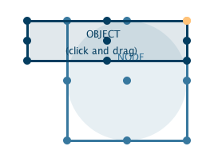
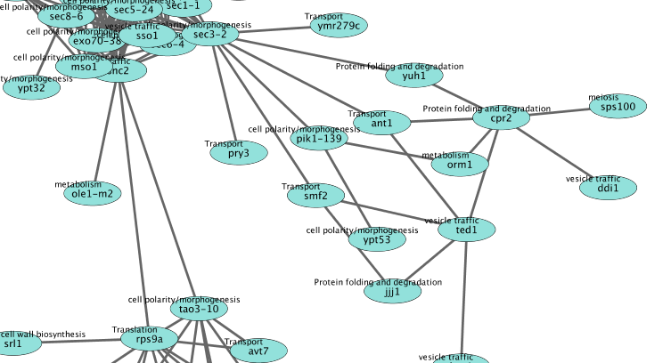

Custom Paint and enhancedGraphics in Cytoscape
This tutorial outlines how to use Cytoscape's Custom Paint and the enhancedGraphics app together in Cytoscape to create visualizations.
- Install the latest version of Cytoscape.
- Install the enhancedGraphics app via
Apps → App Manager . - Download the example data.

The nodes in the network are labeled with the corresponding protein names (yeast), but there is additional information in the Data Node Table that could be useful to display on the nodes. Take a look in the Data Node Table and locate the MC column. We are going to use a combination of Cytoscape's support for Custom Paint, and the enhancedGraphics app to create a second node label with the information from this column.

Create a new column
- In the
Data Node Table , click the plus sign to add a new column. In the drop-down menu, select
to add a new column. In the drop-down menu, select
New Single Column → String . - In the
Create New String Column dialog, enter a name for your new column, in this case Label 2. - This creates a new empty column in the
Data Node Table .
Fill new column
The new column will define a new attribute that we will use for mapping to the
For our purposes, we will define a new mapping for a label based on the column MC:
label: attribute=MC labelsize=10 outline=false background=false color=black
- In the first cell of the Label 2 column, enter the new mapping and click enter. Your new entry may "disappear" to the bottom of the column; just click on the column header once or twice to resort.
- Right-click on the new entry and select
Apply to entire column . This will fill the column with the same mapping.

Create a mapping for new column
We now have a new attribute that we can use for the mapping.
- In the
Style panel, locate theImage/Chart 1 entry in the list of properties. Click on theMap. entry for it to begin creating a mapping. - In the
Column field, select the new Label 2 column. - In the
Mapping Type , select Passthrough Mapping.
You should now see two labels per node that are partially overlapping. We are going to fix the overlap next.....
Positioning the custom paint property
- In the
Properties menu at the top of theStyle interface, select thePaint → Custom Paint 1 → Image/Chart Position 1 . This will add this property to the list. - Click on the
Def. column of this new entry to bring up a position editor. - Drag the darker blue Object to the upper left corner of the Node. Click
OK to continue. You may have to adjust this positioning a few times to achieve an optimal visualization.

The second label we created is now visible in the upper left for each node.
